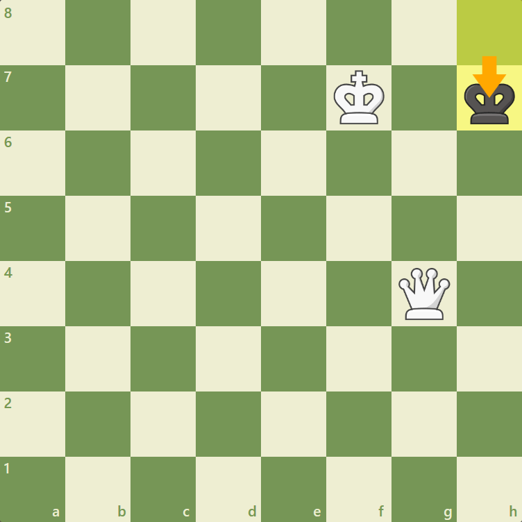

Как се матира с Царица и Цар
- Спечелете опозиция поп и дама: Първо, поставете дамата си така, че да се противопостави на попа на противника с вашия собствен поп в права линия. Това означава да поставите вашата дама и поп на същия ранг, файл или диагонал като попа на опонента.
- Избутайте попа на противника до ръба на дъската: Бавно натиснете попа на опонента към ръба на дъската. Използвайте дамата си, за да ограничите движението на царя и възможностите му. Координирайте своята дама и поп, за да създадете „мрежа“, която не позволява на противниковия поп да избяга.
- Поддържайте опозицията: Докато приближавате ръба на дъската, поддържайте опозицията с вашия цар и царя на противника. Това означава да се гарантира, че винаги има едно поле между двамата царе хоризонтално, вертикално или диагонално.
- Отрязване на полетата за бягство: Постепенно отрязвайте краля на опонента от достигането на останалите полета на дъската. Използвайте дамата си, за да контролирате ключовите полета и да попречите на царя на противника да намери подслон или пътища за бягство.
- Създаване на Zugzwang: Zugzwang е ситуация, при която царят на противника е принуден да се движи и да влоши позицията си. Използвайте своята дама и поп, за да създадете цугцванг, като ограничите наличните ходове на противниковия поп и постепенно затягате примката.
- Мат на ръба на дъската: След като царят на опонента бъде избутан до ръба на дъската, позиционирайте дамата и краля си, за да поставите мат. Поставете царя на опонента в мат, като го атакувате с вашата дама по начин, който не оставя законни ходове за бягство или блокиране на шаха.
